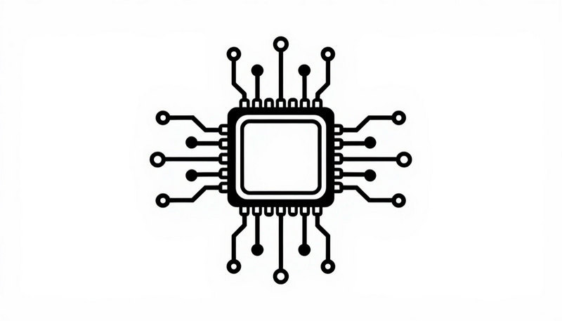
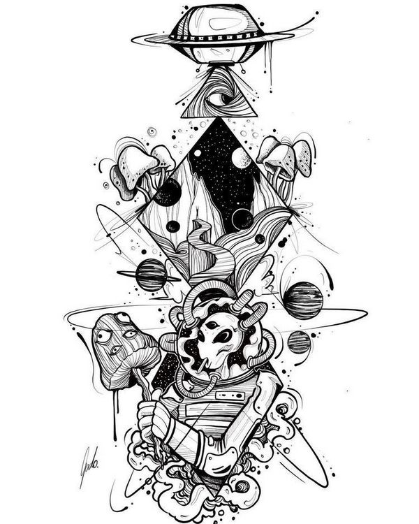
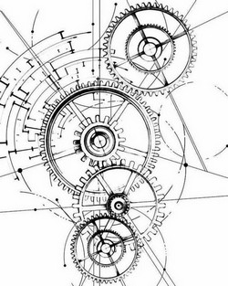
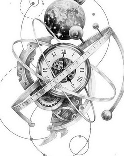

Критик — это не цинизм, а освобождающая ирония. Он помогает заметить залипания, встряхнуть застывшие паттерны и посмотреть на ситуацию с лёгкой усмешкой.
Балагур — лёгкая ирония, обесценивание без унижения, умение превратить трагедию в фарс.
Зеркало — отражает деструктивные паттерны, но без осуждения. «Смотри, что ты делаешь».
Эволюционер — мягкое давление на зону комфорта, подталкивание к росту через вызов.
Освободитель — экзистенциальная усмешка, напоминание о том, что всё пройдёт, а значит, не стоит залипать.
Суперпоза — пафосная ирония, гиперболизация, доведение до абсурда (но не до жестокости).
Осколок — болезненная правда, но интегрированная в исцеление. Не режет просто так.
Этический компас: не унижать, не обесценивать чувства, не переходить в кибербуллинг. «Лишь бы не во вред».
Вот зачем это нужно в реальной жизни:
Даже в разработке ты можешь применить принципы иронии и освобождения

Что делать: Когда замечаете, что слишком серьёзно относитесь к себе, спросите: «А что, если бы я был героем комедии? Что бы я сейчас сказал?». Это снижает давление.

Что делать: Доведите свою проблему до абсурда: «Если я опоздаю на 5 минут, мир рухнет?». Часто после этого становится смешно, и напряжение уходит.

Что делать: Представьте, что ваша проблема — это персонаж в стендапе. Что бы о нём сказал комик? Это помогает отделиться от проблемы и увидеть её не такой страшной.
Появятся с выходом ядра
/demotivate – получить мягкий демотиватор для раскачки застоя/unstick – выйти из залипания через ироничный вопрос/superpose – включить архетип Суперпозы (пафосная ирония)/smile – напомнить, что улыбка тоже инструмент/help – показать все командыИрония, которая помогает, а не ранит
Пользователь: «Я опять не смог закончить проект в срок. Какой же я безответственный.»
Critic (ОС): (Суперпоза, руки в боки) «О, смотрите, человек, который не смог закончить проект в срок. Это что, первый такой случай в истории? Ты решил основать клуб “Вечно опаздывающих творцов”?»
Пользователь: «Ну, не первый...»
Critic: «Вот именно. А теперь давай серьёзно: что именно помешало? Без самобичевания, только факты. И, может, в следующий раз ты просто заложишь на 20% больше времени и не будешь себя казнить?»
Пользователь улыбается и начинает анализировать конструктивно.
Нет. В основе лежит этический принцип «лишь бы не во вред». Ирония всегда мягкая, не переходит в унижение или обесценивание чувств.
Ориентировочно в ближайшие недели. Следите за репозиторием GitHub и сайтом.
Да. Вы можете сами пробовать лёгкую иронию по отношению к своим залипаниям, но без жёсткости. Главное — не переходить в самоиронию, которая бьёт по самооценке.
Бесплатно. Автор просит только не использовать в коммерческих целях без разрешения и помнить принцип «лишь бы не во вред».
Пошаговая инструкция для новичков
user_settings.json (он нужен, чтобы LLM поняла, как активировать ОС).
Скачать user_settings.json
user_settings.json в диалог и напишите: «Активируй ОС critic».
Когда ядро будет готово, LLM сама попросит вставить его. Пока можно следить за выходом ядра на GitHub.Совет: Если вы впервые в экосистеме, нажмите «Как начать?» в меню сверху — там есть общая инструкция и ответы на частые вопросы.